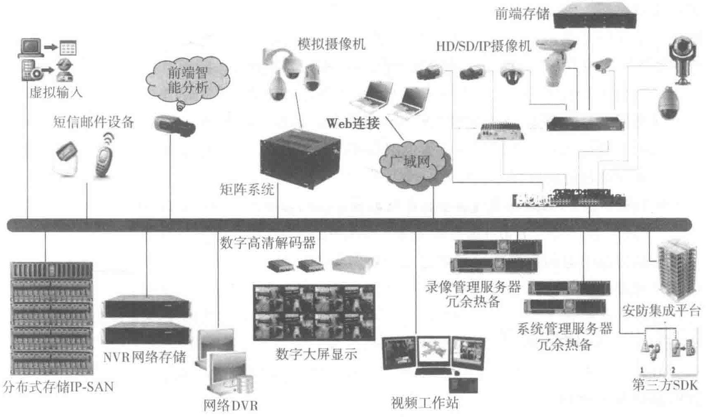

在视频安防监控系统设计时，应基于对数据中心现场的实际踏勘，根据环境条件、风险等级和防护等级要求，合理地选择前端摄像机。
数据中心建筑外公共区域及园区应选用一体化高清网络快球摄像机，具备日夜转换、宽动态及背光补偿的功能，以适应室外不同的天气情况。同时摄像机应有多预制位、可巡航、报警联动等功能。由于室外摄像机的线缆长度均较长，设计时应采用单独供电方式。
电梯轿厢内采用电梯专用摄像机，配合视频编码器，单独供电。
安装在数据中心建筑内的室内摄像机采用高清半球网络摄像机或枪式摄像机，采用POE供电模式。
在选择摄像机镜头时，应根据视场大小和镜头到监视目标的距离等来确定。计算公式如下：
式中：f——焦距（mm）；
A——像场高/宽（mm）；
L——镜头到监视目标的距离（mm）；
H——视场高/宽（mm）。
目前网络摄像机都采用H.264或MPEG4等标准协议对视频数据进行压缩，其视频流带宽分为主码流和子码流，主码流用来存储，子码流一般用来预览和实时观看。只有客户端设备请求调看图像时，摄像机才会发送子码流，并且多个用户在调看同一个画面时，这个